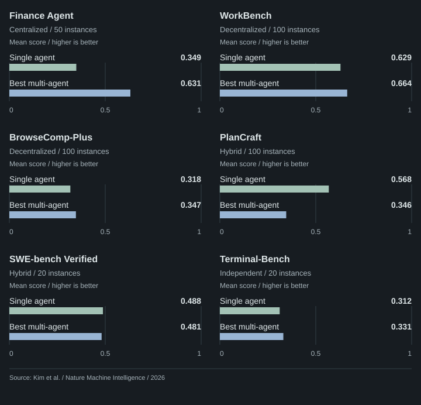
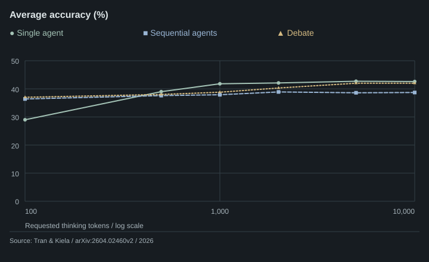
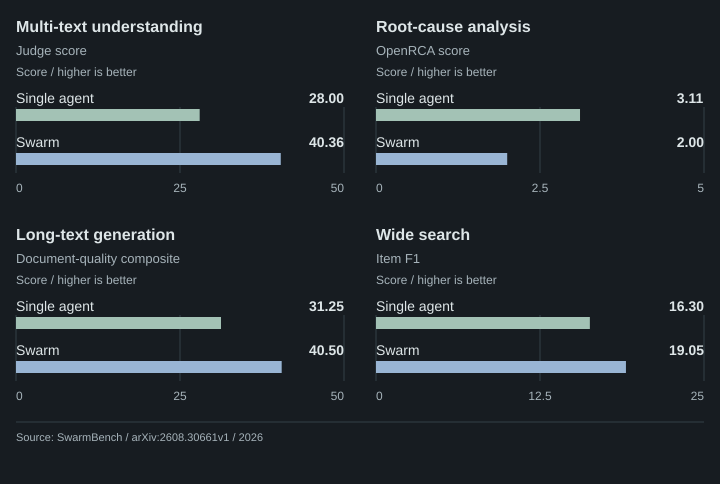
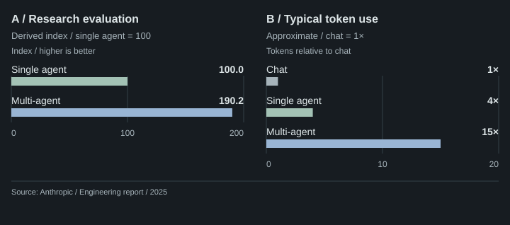
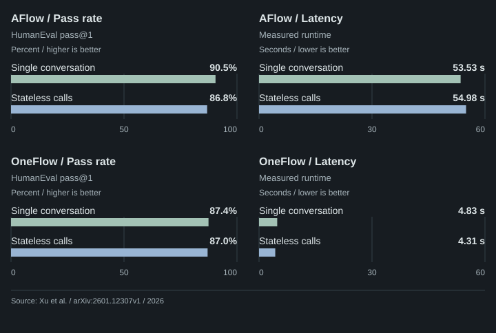

What the research changed
These are our design inferences from the research. The studies do not benchmark SpecPi.
| Research finding | Our decision | In the current system |
|---|---|---|
|
CooperBench · preprint
On coupled coding tasks, communication reduced merge conflicts without a significant gain in cooperation success. |
Keep one integration owner.
A clean merge does not establish correct behavior. |
The parent is the sole writer. Workers review frozen artifacts or analyze selected sources; they cannot edit files. |
|
Anthropic · production report
Independent research branches improved coverage, with substantially higher token use. |
Delegate a specific question.
Separate analysis only when it has a clear purpose. |
Only review and scout jobs are supported. Each declares
its benefit; parallel analysis also names useful parent work. Scouts use selected
snapshots, without live web access.
|
|
MAST · NeurIPS 2025
Failures span system design, coordination, and verification. This is a failure taxonomy, not a single-agent comparison. |
Make handoffs checkable.
Keep requirements, evidence, and missing context explicit. |
Jobs carry assigned requirements and fixed constraints. Reports identify evidence and gaps. The parent checks findings before accepting them; acceptance grants no new authority. |
|
Tran & Kiela · preprint
Reasoning budgets changed the single-versus-multi-agent ranking on multi-hop questions. |
Bound effort and compare fairly.
Extra compute must not be mistaken for a coordination benefit. |
Delegation is opt-in, with two worker slots and fixed call/time limits. The evaluation plan compares it with single-agent and serial workflows at matched resource budgets. |
How it runs
-
01 / ParentDefine the question
Select sources, assign requirements, and state the reason to delegate.
-
02 / Pi workerRead and report
A native Pi AgentSession analyzes its assigned context and returns evidence.
-
03 / ParentVerify and integrate
Check the findings against source and tests, then make any edits.
Pi provides the model/tool loop. SpecPi controls admission, source snapshots, and result validation. Worker sessions stay in memory and load no parent history, ambient instructions, or extensions. Their tools are limited to selected-source list, read, and search.
Enable with /delegate on; use /delegate off to revoke work. Each job has four SDK model calls and 120
seconds. The process permits four batches and 32 calls. These are local execution limits, not a
provider spending cap. See the
runtime and compatibility guide.
What remains to prove
The implementation is experimental. Runtime tests check its controls; they do not establish better task outcomes. The evaluation plan measures accepted results, total cost, elapsed time, and review effort against strong single-agent baselines. SpecPi quality, speed, and cost gains remain unmeasured.
Study data and charts 7 sources
The original seven-study comparison includes results both for and against multi-agent approaches. Keep each study's task, budget, and publication limits attached to its results. See the expanded research ledger for additional evidence and caveats.

Mean scores across tested models. The best multi-agent architecture is selected separately for each benchmark. Matched system token ceilings; actual spending can differ. No pooled score or significance claim.
Data and source details
| Benchmark | Single agent | Best multi-agent | Selected architecture | Instances per configuration |
|---|---|---|---|---|
| Finance Agent | 0.349 | 0.631 | Centralized | 50 |
| WorkBench | 0.629 | 0.664 | Decentralized | 100 |
| BrowseComp-Plus | 0.318 | 0.347 | Decentralized | 100 |
| PlanCraft | 0.568 | 0.346 | Hybrid | 100 |
| SWE-bench Verified | 0.488 | 0.481 | Hybrid | 20 |
| Terminal-Bench | 0.312 | 0.331 | Independent | 20 |
Results: domain-dependent performance; July 2026 version of record. Primary source ↗
{kind=link}

Table 1 averages over four models × two datasets (FRAMES and MuSiQue). Requested token ceilings, not identical actual consumption. The token axis is logarithmic. Three of the seven evaluated methods are shown.
Data and source details
| Requested thinking tokens | Single agent accuracy (%) | Sequential agents accuracy (%) | Debate accuracy (%) |
|---|---|---|---|
| 100 | 29.0 | 36.4 | 37.0 |
| 500 | 39.0 | 37.6 | 38.0 |
| 1000 | 41.8 | 37.9 | 38.8 |
| 2000 | 42.1 | 38.9 | 40.3 |
| 5000 | 42.7 | 38.6 | 42.0 |
| 10000 | 42.6 | 38.7 | 42.0 |
Table 1, Average rows; v2, 11 April 2026. Primary source ↗
{kind=link}

Llama 3.1 70B; 1,000 MMLU-Pro questions. Best reported configurations within the tested compute range. Whiskers are approximate 95% binomial intervals, calculated using the paper's formula. These are not intervals on the differences.
Data and source details
| Method | Accuracy (%) | Configuration |
|---|---|---|
| Self-consistency | 68.7 | 10 iterations |
| Debate | 70.0 | 4 agents, 2 layers |
| Mixture of agents | 71.4 | 5 models, 4 layers |
Section 4.1 and Section 8; ACL SRW, July 2026. Primary source ↗
Individual 95% interval: 100 × [p ± 1.96 × sqrt(p × (1 − p) / 1000)], p = reported accuracy / 100. Rounded source estimates; no paired significance inference.
{kind=link}

Haiku 4.5 single agent and orchestrator; heterogeneous workers; 50 examples per task. Single-agent spending is capped at each task's mean swarm cost. Different metrics and axis ranges; no combined accuracy. No comparison intervals are supplied.
Data and source details
| Task | Single agent | Swarm | Metric |
|---|---|---|---|
| Multi-text understanding | 28.00 | 40.36 | Judge score |
| Root-cause analysis | 3.11 | 2.00 | OpenRCA score |
| Long-text generation | 31.25 | 40.50 | Document-quality composite |
| Wide search | 16.30 | 19.05 | Item F1 |
Table 7, Appendix D.1; metrics in Appendix C.1; v1, 31 August 2026. Primary source ↗
{kind=link}

Two separate observations, not a paired efficiency experiment. Performance uses an Opus 4 lead with Sonnet 4 workers against one Opus 4 agent. Absolute evaluation scores are undisclosed. Token multiples describe typical use relative to chat.
Data and source details
| Observation | System | Value | Unit |
|---|---|---|---|
| A / Research evaluation | Single agent | 100.0 | Performance index |
| A / Research evaluation | Multi-agent | 190.2 | Performance index |
| B / Typical token use | Chat | 1 | Token multiple vs. chat |
| B / Typical token use | Single agent | 4 | Token multiple vs. chat |
| B / Typical token use | Multi-agent | 15 | Token multiple vs. chat |
Internal research evaluation and token-use observations; 13 June 2025. Primary source ↗
Performance index: 100 × (1 + 90.2 / 100) = 190.2. This is a normalized illustration of the reported relative improvement, not a reported absolute score. Do not combine with the separate typical token-use observation to calculate evaluation efficiency.
{kind=link}

Qwen3 8B on HumanEval; vLLM, 16k context, three-run means. Table 4 reports no uncertainty intervals. Compare execution methods within each workflow. Token budgets are not matched; latency and pass rate have separate axes.
Data and source details
| Workflow / measure | Single conversation | Stateless calls | Unit |
|---|---|---|---|
| AFlow / Pass rate | 90.5 | 86.8 | Percent |
| AFlow / Latency | 53.53 | 54.98 | Seconds |
| OneFlow / Pass rate | 87.4 | 87.0 | Percent |
| OneFlow / Latency | 4.83 | 4.31 | Seconds |
Section 4.2.4, Table 4; v1, 18 January 2026. Primary source ↗
{kind=link}

Each square represents one distinct taxonomy label. Counts describe the taxonomy's structure, not failure frequency, severity, or production reliability. There is no single-agent control group.
Data and source details
| Category | Distinct modes | Taxonomy IDs |
|---|---|---|
| System design | 5 | 1.1–1.5 |
| Inter-agent misalignment | 6 | 2.1–2.6 |
| Task verification | 3 | 3.1–3.3 |
Appendix A.1–A.3, printed pages 24–25; final NeurIPS 2025 paper. Primary source ↗
{kind=link}